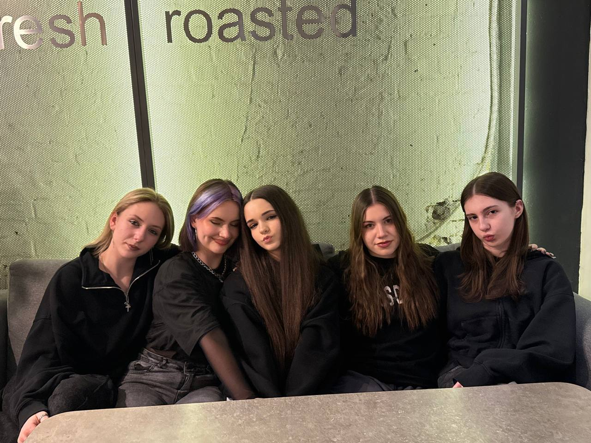

Наведіть курсор на кожну учасницю на спільному фото, щоб переглянути підказку, або натисніть для переходу до опису:

| Учасниця на фото | Опис |
|---|---|
| 1. Подруга зліва | Дівчина зі світлим волоссям у чорній олімпійці на блискавці — спокійна, стильна та надійна. |
| 2. Валерія (я) | Друга зліва з фіолетовими пасмами — це я. |
| 3. Подруга в центрі | Дівчина з довгим прямим волоссям у чорному світшоті — життєрадісна та легка на підйом. |
| 4. Четверта зліва | Дівчина з каштановим волоссям і світлим принтом на кофті — щира, привітна й завжди готова допомогти завжди. |
| 5. Подруга справа | Дівчина в чорному худі крайня праворуч — харизматична та артистична. |
Навігаційна карта зі спливаючими підказками про подруг з танців.